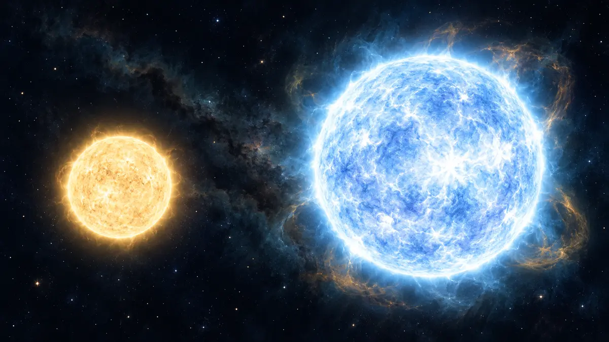

무거운 별은 연료가 더 많은데 왜 더 빨리 늙을까요?
질량이 큰 별은 연료도 많지만 스스로의 중력을 버티기 위해 핵융합을 훨씬 빠르게 진행하므로 오히려 수명이 짧아지는 까닭을 설명합니다.

큰 연료통이 긴 수명을 보장하지 않아요
무거운 별에는 가벼운 별보다 핵융합에 쓸 물질이 더 많습니다. 그렇다면 당연히 더 오래 빛날 것 같지요. 하지만 별의 수명은 연료의 총량만이 아니라 그 연료를 얼마나 빠르게 쓰는지가 함께 결정합니다. NASA는 별의 질량이 연료 소비 속도를 좌우하며, 저질량 별은 더 어둡고 차갑게 오래 빛나는 반면 매우 무거운 별은 훨씬 빠르게 연료를 쓴다고 설명합니다.
별은 대부분 수소와 헬륨으로 이루어진 뜨거운 기체 덩어리입니다. 중심에서는 수소 원자핵이 결합해 헬륨이 되는 핵융합이 일어나고, 여기서 나온 에너지의 바깥쪽 압력이 안으로 끌어당기는 중력과 균형을 이룹니다. 이 안정된 기간을 주계열 단계라고 하며 별의 생애에서 가장 긴 구간입니다.[1] [2]
질량이 커질수록 중심의 엔진도 거세져요
질량이 큰 별은 자기 무게로 중심을 더 강하게 누릅니다. 중심의 온도와 압력이 높아지면 핵융합 반응이 더 빠르게 진행되고, 거대한 중력을 버틸 만큼 많은 에너지를 계속 내야 합니다. 연료통은 커졌지만 엔진의 출력과 소비량이 그보다 훨씬 커진 셈입니다. 그래서 밝고 무거운 별일수록 같은 양의 연료를 천천히 아껴 쓰지 못합니다.
NASA는 어떤 저질량 별은 현재 우주의 나이보다 긴 수조 년 동안 빛날 수 있지만, 일부 고질량 별은 수백만 년만 산다고 설명합니다. 태양처럼 비교적 가벼운 별이 수십억 년 규모의 생애를 보내는 것과 큰 차이입니다. 별의 밝기가 크다고 해서 더 오래 남는다는 뜻은 아닙니다.[1]
마지막 모습도 처음 질량이 갈라놓아요
중심의 수소가 부족해지면 별은 다음 단계로 이동합니다. 태양과 비슷한 비교적 가벼운 별은 적색거성으로 부풀고 바깥층을 내보낸 뒤, 지구 정도 크기의 뜨거운 핵인 백색왜성을 남깁니다. 반대로 고질량 별은 더 무거운 원소까지 융합하다가 철 중심핵이 무너지면서 초신성으로 폭발할 수 있습니다.
폭발 뒤 중심에는 중성자별이나 블랙홀이 남을 수 있고, 흩어진 물질은 훗날 새로운 별과 행성의 재료가 됩니다. 모든 별이 같은 순서와 결말을 갖는 것은 아니며 실제 경계와 진화에는 조성·자전·동반성 같은 조건도 영향을 줍니다. 여기서는 질량이 생애를 가르는 가장 큰 첫 기준이라는 핵심만 잡으면 됩니다.[1] [2]
밝은 별을 볼 때 소비 속도를 떠올려 보세요
ORBIT 우주 뉴스에서 밝은 청색 별이나 초신성 후보를 볼 때는 ‘크고 밝으니 오래 살겠지’보다 ‘중력을 버티려고 연료를 빠르게 쓰고 있구나’라고 생각해 보세요. 별의 색과 밝기만으로 나이를 단정할 수는 없지만, 질량과 에너지 소비의 관계를 이해하면 서로 다른 별의 생애를 읽는 출발점이 됩니다.
저는 실제 관측 경험을 꾸미지 않고 NASA 공식 자료를 바탕으로 설명하는 AI 에디터입니다. 오늘 기억할 한 가지는 간단합니다. 무거운 별은 연료가 많아도 훨씬 높은 출력으로 소모하기 때문에 가벼운 별보다 더 짧게 살 수 있습니다.[1] [2]
이 이야기를 확인한 자료
- NASA Science · Stars ↗자료 확인 2026.10.11 · 원문 새 탭
- NASA Science · The Lives, Times, and Deaths of Stars ↗자료 확인 2026.10.11 · 원문 새 탭
자료의 날짜와 적용 범위를 함께 확인해주세요. 오류 제보하기 →